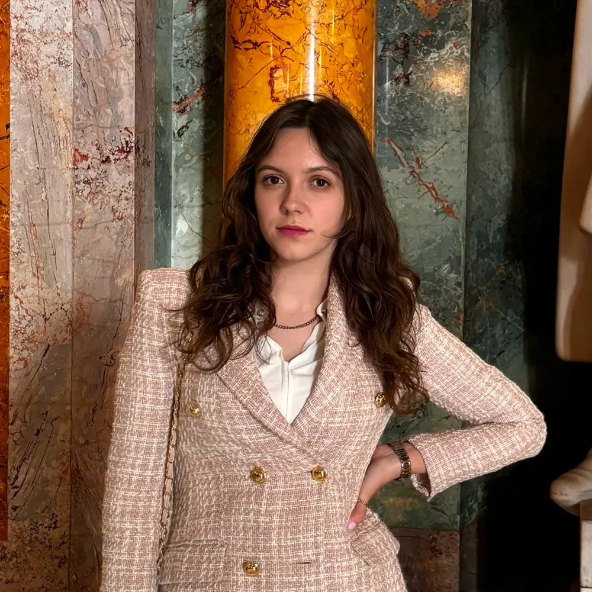
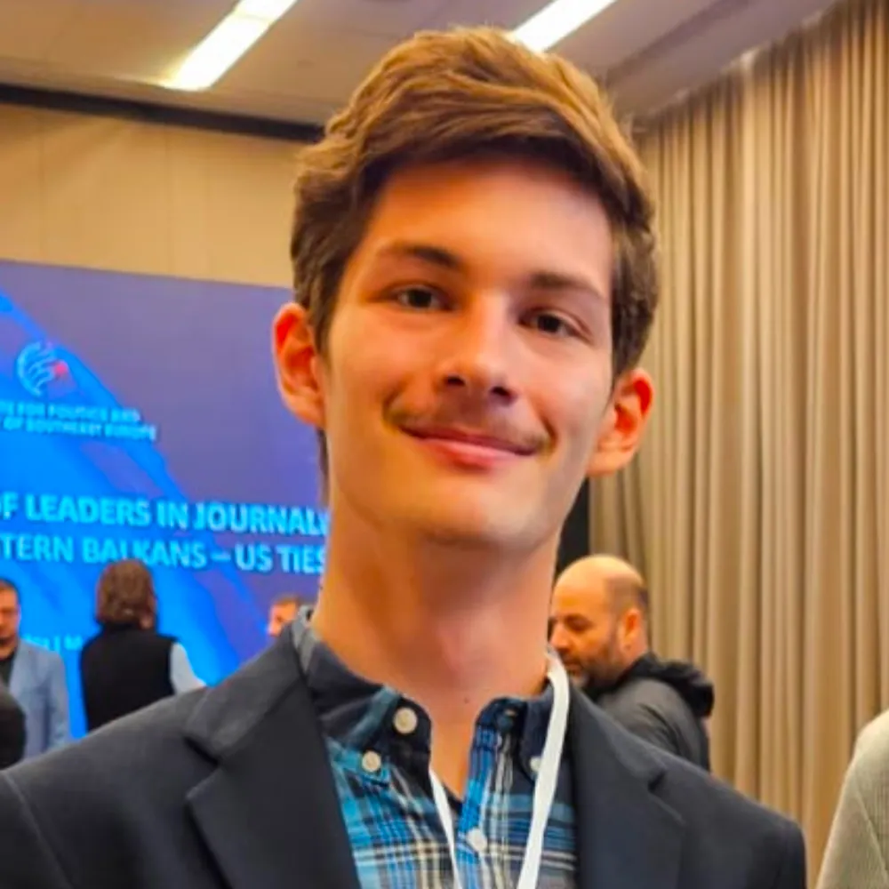

About Us
Young people are the present and the future. The greatest wealth of a nation is the youth of its society. The value of that wealth is measured by the opportunities and possibilities offered to young people.
We believe in the necessity of improving the tools and skills that will enable young people to build their own stable future, careers, and dreams, while realizing their ambitions and potential.
The Youth Caucus, through its work, skills, and knowledge, positively contributes to the further development of friendly international relations between, on one side, the Republic of Serbia and, on the other, various relevant actors. It recognizes the advancement of Serbian-American relations and, through its activities, seeks to ensure that part of this progress is directed toward the interests of young people in the Republic of Serbia.
Through its work, it strives to familiarize young people with the historical, cultural, and economic values of the United States of America and to break down stereotypes about the United States that are prevalent among youth.
Members
Meet the members of the Youth Caucus, individuals striving to build the future that young people deserve
-

Novak Đurić President Bachelor of Political Science in International Relations -

Isidora Zorić Faculty of Political Science, University of Belgrade -

Dušan Gospić Bocconi University